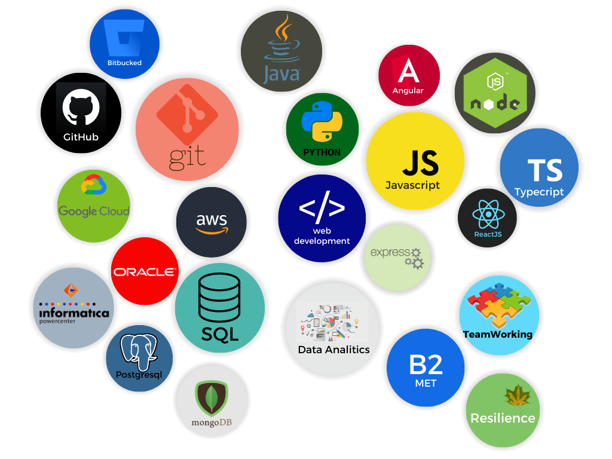

Profesional Profile
Frontend Expertise:
- Adept in leveraging modern frameworks like ReactJS, NextJS, and AngularJS to build interactive, performant, and visually appealing web and mobile applications.
- Possess a strong foundation in HTML, CSS, and JavaScript, ensuring pixel-perfect layouts, seamless user interactions, and dynamic functionalities.
- Continuously stay updated with the latest frontend trends and best practices to deliver applications that meet evolving user needs and industry standards.
- Skilled in backend development with TypeScript and Java, using frmaeworks as expressJs, spring, and technologies as AWS lamda, appsync, step funcions e.t.c.
- Experienced in building secure and scalable RESTful APIs that seamlessly integrate with frontend components.
- Possess a strong understanding of database management systems, ensuring efficient data storage and retrieval.
- Data Migration: Extensive experience in migrating data from legacy systems to modern platforms, ensuring data integrity and continuity.
- Comprehensive Testing: Knowledge in rigorous testing practices. Utilize various testing methodologies like unit testing, integration testing, and end-to-end testing to guarantee application quality and stability.
- Deployment: Knowledge deploying applications to production environments, ensuring smooth transitions and minimal downtime.
Perfil Profesional
- He usado frameworks modernos como ReactJS, NextJS y AngularJS para construir aplicaciones web y móviles interactivas, de alto rendimiento y visualmente atractivas.
- Poseo una base sólida en HTML, CSS y JavaScript, lo que garantiza diseños pixel-perfect, interacciones fluidas del usuario y funcionalidades dinámicas.
- Me mantengo constantemente actualizado con las últimas tendencias y mejores prácticas de frontend para entregar aplicaciones que satisfagan las necesidades cambiantes de los usuarios y los estándares de la industria.
- Experto en desarrollo backend utilizando TypeScript y Java.
- Experiencia en la construcción de API RESTful seguras y escalables que se integran perfectamente con los componentes frontend.
- Poseo un conocimiento profundo de los sistemas de gestión de bases de datos, lo que garantiza un almacenamiento y recuperación de datos eficiente.
- Migración de Datos: Amplia experiencia en la migración de datos de sistemas heredados a plataformas modernas, garantizando la integridad y continuidad de los datos.
- Pruebas Exhaustivas: Experiencia en el uso prácticas de prueba rigurosas. Utilizo diversas metodologías de prueba como pruebas unitarias, pruebas de integración y pruebas de extremo a extremo para garantizar la calidad y estabilidad de la aplicación.
- Despliegue: Conocimiento en despliegue aplicaciones en entornos de producción, asegurando transiciones fluidas y un tiempo de inactividad mínimo.
Experience
Work experience and projects I have been involved in
Experiencia
Trabajos desempeñados y proyectos en los que he participado

Byte4bit
FullStack Developer | October 2023 - Nowadays
I work as a Full Stack Developer at varius aplications as 88Pay, an application designed to assist small businesses that lack easy access to payment platforms across multiple countries through a unified platform. Our system is built using TypeScript, employing a microservices architecture orchestrated with Kafka, and deployed via AWS Lambda. Our frontend is developed using Next.js, complemented by a library of visual components.
Byte4bit
Desarrollador fullstack | Octubre 2023 – Actualidad
Trabajo como Desarrollador Full Stack en varias aplicaciones como 88Pay, diseñada para ayudar a pequeñas empresas que carecen de acceso a plataformas de pago, en varios países, a través de una plataforma unificada. Nuestro sistema está construido utilizando TypeScript y emplea una arquitectura de microservicios orquestada con Kafka, y se despliega a través de AWS Lambda. Nuestro frontend está desarrollado utilizando Next.js, usando una arquitectura de microfrontend.
Assisttu
Desarrollador fullstack | Julio 2023 – Diciembre 2023
Desarrollo frontend para Assisttu, una aplicación que ofrece asistencia virtual a pedido en diversas áreas a emprendedores y propietarios de pequeñas y medianas empresas. Desarrollamos esta aplicación utilizando el framework ReactJS a partir de diseños de diseño de Figma. Como desarrollador de software para esta aplicación, también tengo experiencia en la recopilación de requisitos, configuración y mantenimiento de repositorios Git y de imágenes Docker.
FullStack Developer | July 2023 - December 2023
Frontend development for Assisttu, an app that provides on-demand virtual assistance in different areas to entrepreneurs and owners of small and medium businesses, we developed this app using ReactJS framework created from Figma Layout designs. As a software developer for this app I also have experience gathering its requirements and configuring and mantaining Git repos and docker images.
Guandera SAS
Analista Desarrollador | Febrero 2020 – Agosto 2023
Trabajo en el desarrollo tanto del frontend como del backend, utilizando frameworks como ReactJS, AngularJS, NodeJS y Spring. Integro APIs y servicios externos, colaborando estrechamente con equipos de diseño y backend para interfaces cohesivas y una integración adecuada. Mi competencia se extiende a la administración de GCP y AWS, la creación de pruebas unitarias e integración sólidas, el liderazgo del equipo, la revisión de solicitudes de extracción (PR), y la toma de decisiones arquitectónicas. También trabajo en el desarrollo de ETL para Colpatria Scotiabank.
FullStack Developer | February 2020 - August 2023
I work in both frontend and backend development, using frameworks like ReactJS, AngularJS, NodeJS, and Spring. I integrate APIs and external services, collaborating closely with design and backend teams for cohesive interfaces and proper integration. My proficiency extends to GCP and AWS administration, crafting robust unit and integration tests, guiding the team, conducting PR reviews, shaping architectural decisions. Also work in ETL development for Colpatria Scotiabank.
DataJam Sikuani 2022 - Tansparencia
Participante ganador | Noviembre 2022 – Enereo 2022
Ganador del datajam, presentando un software para la extraccion y visualización de los datos del congreso de la republica. Particion en semillero de inverstigación, para el desarrollo y la comercialización del software. Desarrollo del producto en ReactJS, Spring Boot, Python, postgress, GCP, AWS y Pentaho.
DataJam Sikuani 2022 - Tansparency
Winner Participant | November 2022
Achieved victory in the Datajam competition by conceptualizing and introducing an extraction software designed for tracking voting patterns within the Congress of the Republic of Colombia. Executed the development of an application leveraging ReactJS, Spring, Pentaho, Postgres, AWS, and Python.
Colpatria Scotiabank Colpatria
Contratista | Julio 2021 – Abril 2023
Mineria y migración de datos usan, desarrollando sistemas de ETL para grandes volúmenes de datos de fuentes diversas hacia sistemas de destino. Analizando datos y tendencias, colaborado con los equipos de negocio para entender sus necesidades analíticas y proporcionar soluciones efectivas.
Contractor | July 2021 – April 2023
Responsibilities: Using data mining and migration, developing ETL systems for large volumes of data from diverse sources to target systems. Analyzing data and trends, collaborating with business teams to understand their analytical needs and provide effective solutions.
Aprendizaje de maquina para análisis de suelos AMAS
PROYECTO DE GRADO | Enero 2019 – Diciembre 2019
Software que sirve para facilitar la estimación de las propiedades del suelo usando el espectro infrarrojo cercano. Elaborada sobre el framework Express, usando como base de datos MongoDB y usando la librería de sickit-learn para el desarrollo de algoritmos de aprendizaje de máquina que son consumidos desde un servicio web en Flask.
Machine Learning for Soil Analysis AMAS
GRADUATION PROJECT | January 2019 – December 2019
Software that serves to facilitate the estimation of soil properties using the near-infrared spectrum. Developed on the Express framework, using MongoDB as the database and using the scikit-learn library for the development of machine learning algorithms that are consumed from a web service in Flask.
Habilidades
Habilities

Educacion
Formación academica
Education
Academic formation
Pontificia Universisdad Javeriana
Ingenieria de sistemas | Enero 2015 – DICIEMBRE 2019
Pregrado en ingeneiria de sistemas con enfasis en construccion de software.
Pontificia Universidad Javeriana
Systems Engineering | January 2015 – December 2019
Bachelor's degree in Systems Engineering with an emphasis on software construction.
Platzi
Diversos cursos | MAYO 2019 - ACTUALIDAD
Curso Profesional de Git y GitHub. Curso de JavaScript Engine (V8) y el Navegador. Curso de Asincronismo con JavaScript. Curso Práctico de GraphQL con JavaScript.
Various Courses | May 2019 - Present
Professional Course in Git and GitHub. JavaScript Engine (V8) and Browser Course. Asynchronous JavaScript Course. Practical GraphQL with JavaScript Course.
SENA
Tecnico en progrmacion de software | FEBRERO 2014-DICIEMBRE 2014
Tecnico para aprendizaje de programación de software usando html, css y php.
Software Programming Technician | FEBRUARY 2014 - DECEMBER 2014
Software programming technician using HTML, CSS, and PHP.
 Previous
Previous
 Next
Next